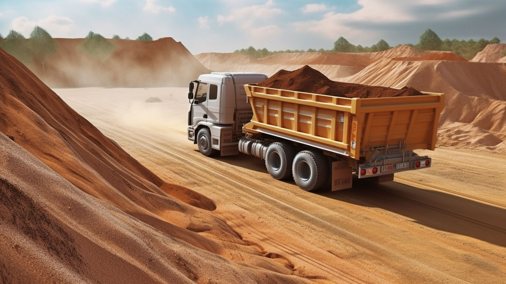
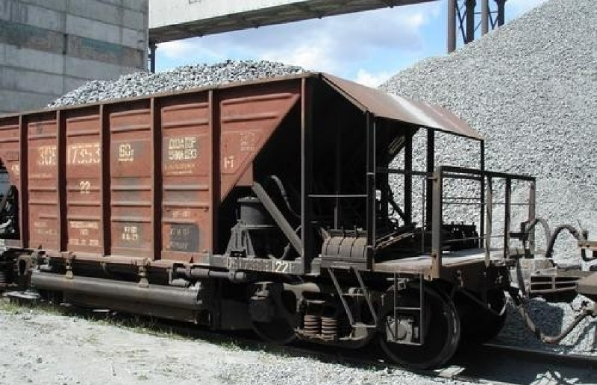
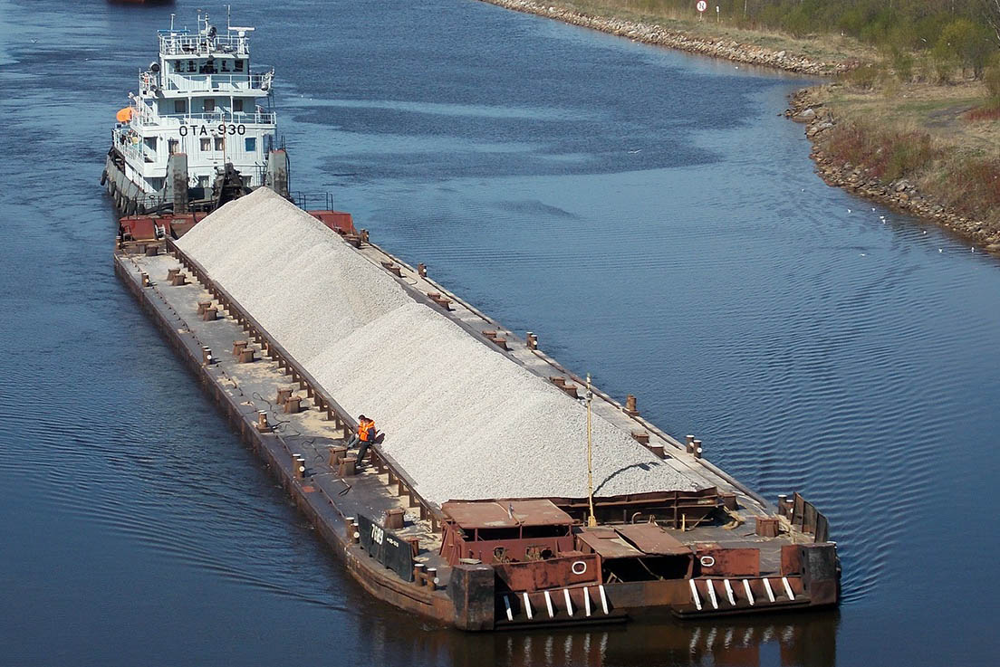
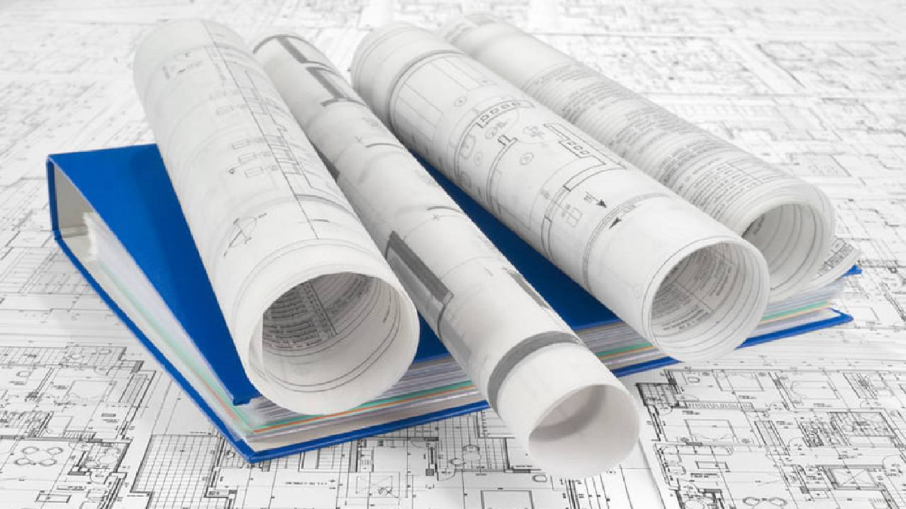
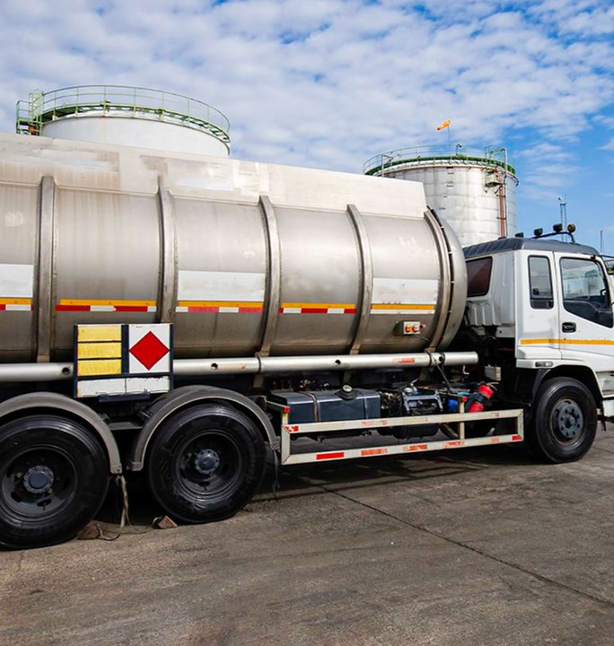

Автокраны
Zoomlion ZT250V — 25 т; Zoomlion ZT300V — 30 т
2 ед.Материал — это половина задачи. Вторую половину закрываем логистикой и партнёрскими компаниями: техникой, проектированием и строительными работами.
Работаем от одного самосвала до целых составов — с собственного тупика и перевалочной площадки.

Самосвалы доставляют материал на объект круглосуточно. График подачи согласуем под вашу смену.

Собственный тупик, погрузка с двух сторон, до 2 составов в сутки. Отправки по России большими партиями.

Поставка баржами для крупных объектов — на базу или причал заказчика. Объём до десятков тысяч тонн.
Собственная площадка для накопления и хранения материала. Загрузка идёт параллельно с приёмом и отгрузкой — без простоев составов.
Материал аккредитован и сертифицирован — подходит для дорожного и промышленного строительства, подтверждаем документами.
24 единицы техники для земляных, грузовых и дорожных работ. Предоставляется смежной компанией «Стройсервис» и партнёрами. Фактическая доступность уточняется при заявке.
Zoomlion ZT250V — 25 т; Zoomlion ZT300V — 30 т
2 ед.
Komatsu PC300 / PC300-7 / PC300-8MO; JCB JS205LC, JS220LC; VOLVO EC240BLC (2), EC290BLC; DOOSAN DX225LCA-7M; Lovol FR330D; Sunward SWE215-3H; LGCE E6215FLC
13 ед.
Hidromek HMK102S
1 ед.
Sitrac C7H (2); КамАЗ 65222
3 ед.
SHANTUI DH17B3XL, DH20B3XL; Komatsu D65EX-16
3 ед.
BOMAG BW213D-4; HAMM грунтовый
2 ед.В наличии 24 единицы техники. Фактическая доступность и комплектация уточняются при оформлении заявки.

Инженерные изыскания, разработка проектной и рабочей документации, согласования с контролирующими органами.
Полный цикл строительно-монтажных работ, реконструкция промышленных объектов, ж/д пути и инженерные сети.

АИ-92, АИ-95 и дизельное топливо с доставкой, 24/7. Поставка от 1 000 до 33 000 литров.
Строительство, аренда техники и подготовка проектной документации выполняются силами ООО «Стройсервис» и проверенных сторонних компаний — вы получаете единый контур заказа через нас, без поиска подрядчиков на стороне.
Материал + доставка + техника + документация. Соберём решение под задачу.